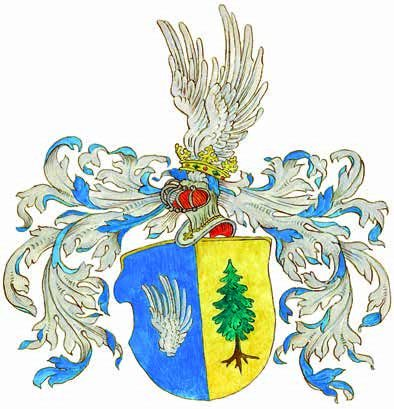
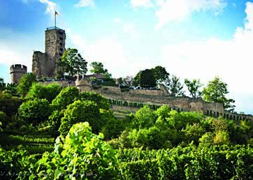
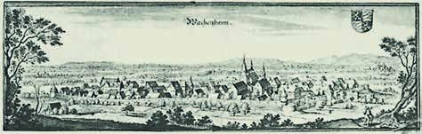
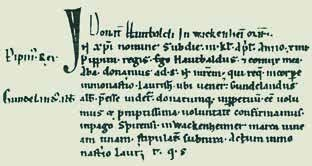

I. Die Zeit vor der Gründerfamilie · Kapitel 4
Vorfahren von Friedrich Böhm in Wachenheim
Vorfahren vom Friedrich Böhm in Wachenheim
Erster Hinweis auf Wachenheim im Lorscher Kodex 766 (Schenkung eines Weinberges)
Ansicht von Wachenheim nach Merian um 1643
Im 11. Jahrhundert gehörte Wachenheim zum Herrschaftsbereich der Salier und ging nach dem Tod von Kaiser Heinrich V. an die Staufer über. Aus dieser Zeit stammt auch die heute nur noch als Ruine vorhandene Burganlage, die zu einem von den Staufern planmäßig angelegten Burgensystem gehörte. 1341 wurden Wachenheim durch Kaiser Ludwig den Bayern Stadtrechte verliehen. 1436 errichtete Herzog Stefan, ein Sohn des römisch-deutschen Königs Ruprecht (1398–1410), eine Münzstätte, die bis 1471 in Betrieb war. In diesem Jahr wurde Wachenheim, nachdem es bis dato im Besitz von Herzog Ludwig dem Schwarzen gewesen war, von Kurfürst Friedrich I. von der Pfalz eingenommen. Bei dieser Eroberung wurde die Burg Wachenheim abgebrannt, größtenteils zerstört und anschließend nur noch teilweise wieder aufgebaut. Burg und Stadt überstanden den bayerisch-pfälzischen Erbfolgekrieg relativ unversehrt. Während des Dreißigjährigen Krieges wurde Wachenheim ab 1621 von spanischen Truppen besetzt, die 1631 von schwedischen Truppen unter König Gustav Adolf vertrieben wurden. Auch nach dem Dreißigjährigen Krieg wurde die Region von Wachenheim immer wieder belagert, einer der Höhepunkte war der französischpfälzischen Erbfolgekrieg (1688–1697), in dessen Verlauf Wachenheim vollständig niedergebrannt wurde.
Im 18. Jahrhundert wurde Wachenheim wieder aufgebaut und entwickelte sich günstig, allerdings kam es durch die Wirren der französischen Revolution zu weiteren Belagerungen und Zerstörungen. 1794 fielen französische Truppen in den Ort ein und plünderten ihn. Bis 1814 gehörte Wachenheim dann zum Département Donnersberg, Nach dem Ende der Herrschaft von Napoleon I. wurde die linksrheinische Pfalz und damit auch Wachenheim ab 1816 durch das Königreich Bayern verwaltet. Sowohl
im Deutsch-Französischen Krieg 1870/71 als auch im Ersten Weltkrieg blieb Wachenheim von weiteren Zerstörungen verschont. (Quelle: Wikipedia).
Der Name Böhm oder Beheim ist seit dem 30 Jährigen Krieg in Wachenheim nachweisbar. Jobs (Jost) Dietr Böhm (geb. 1576) war in Wachenheim mit einer Enkelin des Caspar Lerch von Dirmstein verheiratet, die das heutige Familienwappen in die Familie brachte. Ebenfalls ist Hanns Böhm (Beheim) geb. 1612 als kurpfälzischer Schultheiss vermerkt. Während des 30-jährigen Krieges und der pfälzisch-französischen Erbfolgekriege besteht eine Taille im Stammbaum; es folgt dann der Schulmeister Johann Caspar Böhm (geb.1702), der Schustermeister Philip Jacop Böhm (geb. 1726, mit 11 Geschwistern), dem ein weiterer Philip Jacop Böhm (geb. 1767) folgt mit 5 Geschwistern. Dieser erscheint als erster mit der Berufsbezeichnung Weinwirt. Den Aufschwung zum Weinhändler schafft der 1810 geborene Georg Böhm. Er ist der Vater des Stammvaters dieser Familiengeschichte von Friedrich Böhm. Zusammen mit Bruder Ludwig Böhm gründete er die Schaumweinkellerei Wachenheim. Der Bruder seines Vaters, Philip Jacop Böhm, Pfarrer in Albisheim, ist Vater der Emma Maria Barbara, die 1857 Ehefrau von Ferdinand Herder wurde. Sein Bruder Georg Ludwig Böhm verzog nach München, wo die der Familie weiter verbundenen Kinder Heinz Böhm und Emmi Hoffman lebten. (Quelle: Stammbaum Böhm, 1935/40, von Leonhard Renner).
Oben: 1689 Melac Feldherr von Ludwig XIV zerstörte Schloss und Stadt Wachenheim
Mitte: Melac, (Noch heute werden Hunde nach ihm benannt)
Unten: Das heute verwendete Familienwappen der Böhm’s



